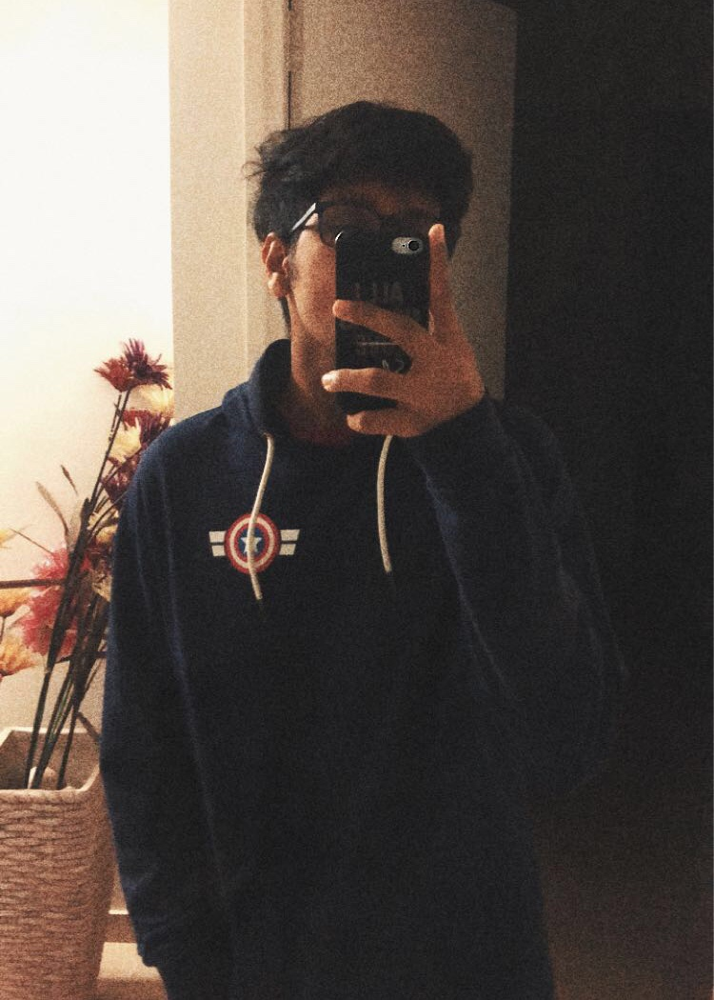
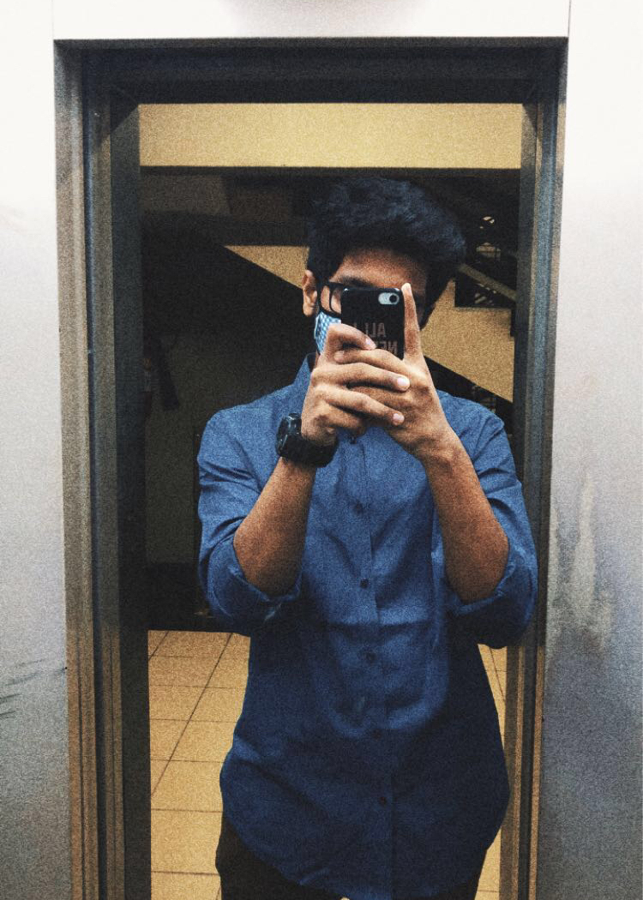
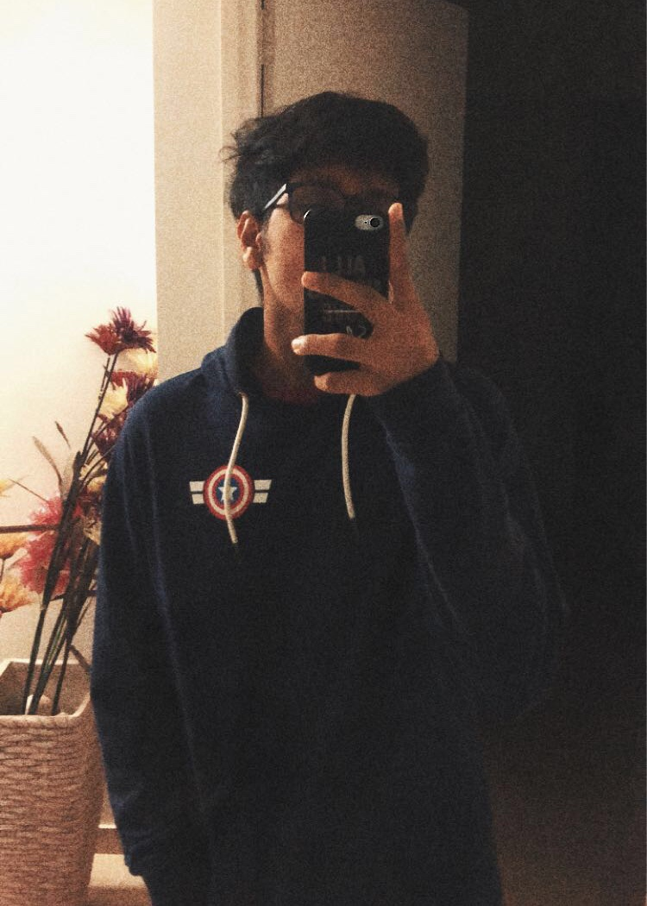
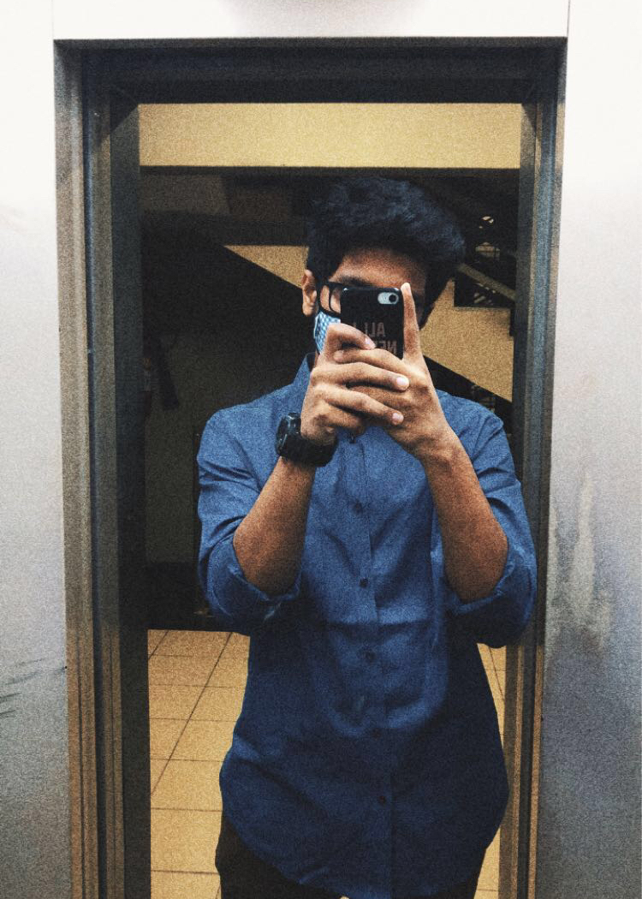

I'm a security enthusiast currently working as a security architect intern at Sony & pursuing my 🎓 master's at the University of Southern California. 🔍 I'm on a mission to explore the fascinating realms of security in AI and cloud security, and your mission, should you choose to accept it; don't worry, this website won't self destruct. 😂
Okay, so a little about me; I did my undergrad with a minor in Cyber Security and graduated top of the class (subtle brag 😏). I've been deeply inspired by how cyberspace has been revolutionizing ever since and how creative threat actors have been to bypass security tactics. This motivated me to defend the digital landscape by implementing a robust architecture highlighted through the projects I've worked on so far.
Apart from my studies, I'm always looking to develop innovative projects, which helps me to learn a ton of new stuff and grow as a student. Also, I enjoy writing technical things ✍️ on my blog.
If you want to chat, feel free to reach out on rnchoksi@usc.edu